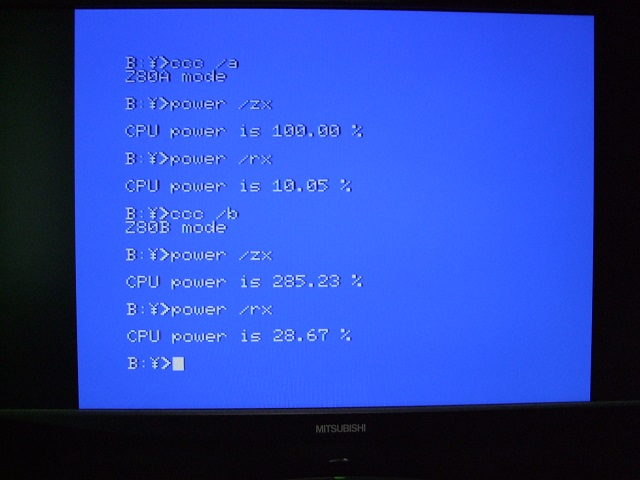

A1ST>A1GT?
無改造品のA1STとA1GTを比較すると、A1GTの4〜6%ほど遅くなります。理由は、内蔵メモリが512kB（128kBメモリx4）の場合、256kB（128kBメモリx2）に比べ、メモリのリフレッシュにかかる時間が2倍になるからです。実用面から言えば、メモリが多い方が使いやすいので、256kBの方が良いということではありません。また、内蔵メモリを1MB（512kBx2）に改造した場合は、内蔵メモリが256kBの時と同じ速度になります。
にがさんのサイトの「松下FS-A1FXの改造 後編」記事の「3倍速クロックアップ」の説明の中に「以前に作成した改造記事」があります。パソコン通信時代に作られた改造記事ですが、そのアーカイブの中につじかわさん作成の「POWER.COM」というCPU速度を測定するツールがありましたので、それを使って測定してみました。同梱されているにがさん作成の「CCC.COM」という動作モードを切り替えるツールを使いながらだと便利です。3倍速改造を施したA1WSXだとこんな感じです。Z80A modeは通常の速度、Z80B modeは高速（3倍速）モードでの結果になります。

「/ZX」はZ80の通常速度を100%としたときの速度、「/RX」はR800の通常速度を100%にしたときの速度です。その他の機種も測定した結果は下記の通りです。A1ST/A1GTの場合はDRAMのリフレッシュタイミングによって±0.1%程度のばらつきがでます。
| 機種 |
動作モード |
/ZX |
/RX |
| FS-A1FX |
3.58MHz |
100.00% |
10.05% |
| 5.38MHz |
142.15% |
14.29% |
| FS-A1WSX |
3.58MHz |
100.00% |
10.05% |
| 10.74MHz |
285.23% |
28.67% |
| FS-A1ST (256kB) |
R800/DRAM |
995.95% |
100.02% |
| R800/ROM |
994.94% |
100.01% |
| Z80 |
100.00% |
10.05% |
| FS-A1ST (1024kB) |
R800/DRAM |
994.81% |
100.00% |
| R800/ROM |
994.78% |
99.99% |
| Z80 |
99.99% |
10.05% |
| FS-A1GT (512kB) |
R800/DRAM |
954.39% |
95.93% |
| R800/ROM |
954.38% |
95.94% |
| Z80 |
100.05% |
10.05% |
やはり、A1GTでは5%ほどA1STより遅くなるという結果になっています。しかし、クロックが変わっているわけではないので、VDPやFDCなどの周辺回路の動作が遅くなるわけではなく、ゲーム等に与える影響は限定的です。これはCPUの処理速度を測定するものなのでR800のDRAMモードとROMモードでは差がでませんが、ゲーム等ではむしろDRAMモードかROMモードかの方が体感速度（？）に効いてくる気がします。